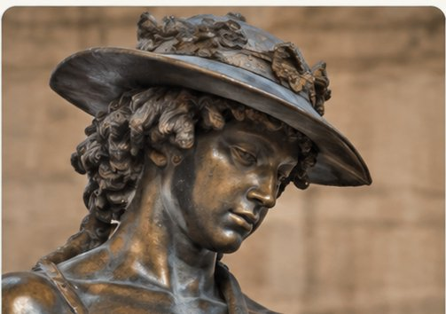

Lorenzo Ghiberti
Les portes du baptistère de Florence
Fiche à venirLa sculpture explore les proportions humaines, le mouvement et les effets de profondeur dans le relief.

Les portes du baptistère de Florence
Fiche à venirLe corps vivant et le relief écrasé (stiacciato)
Fiche à venirIllustration générée par IA, non documentaire. Les œuvres réelles sont présentées dans les fiches artistes.